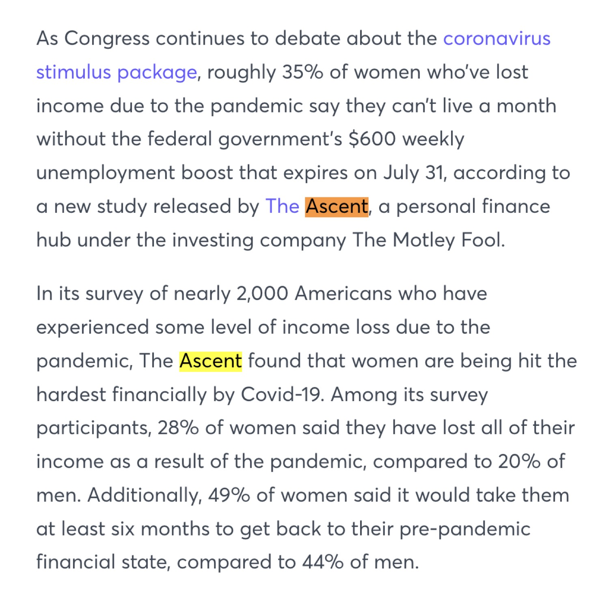
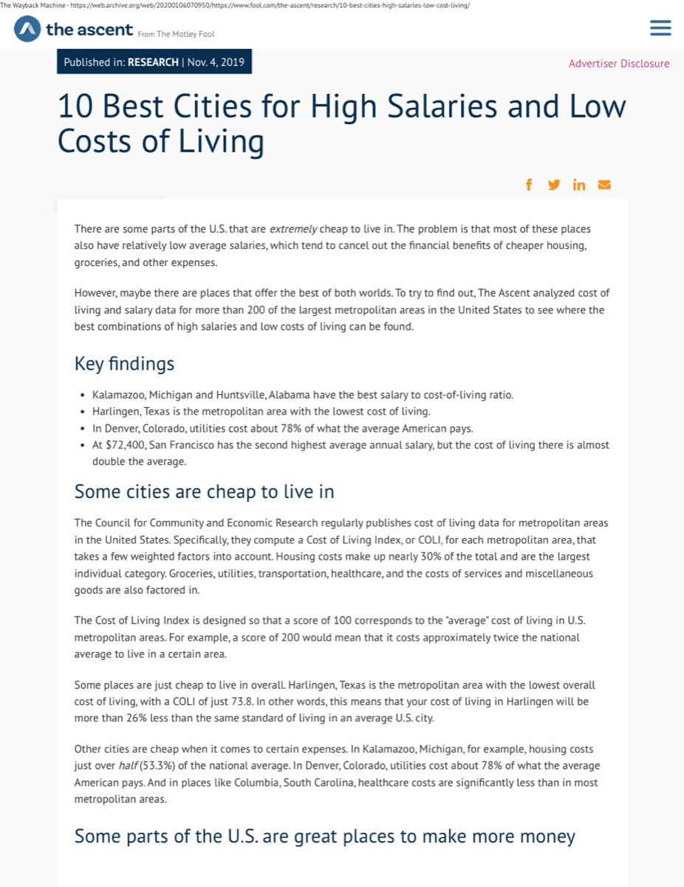
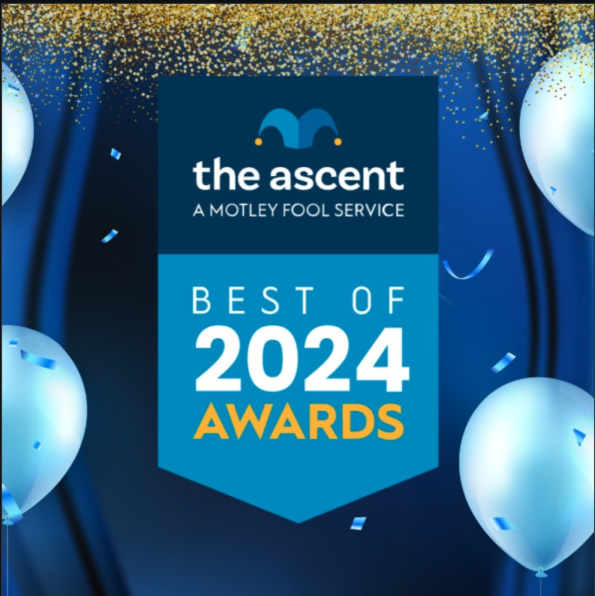
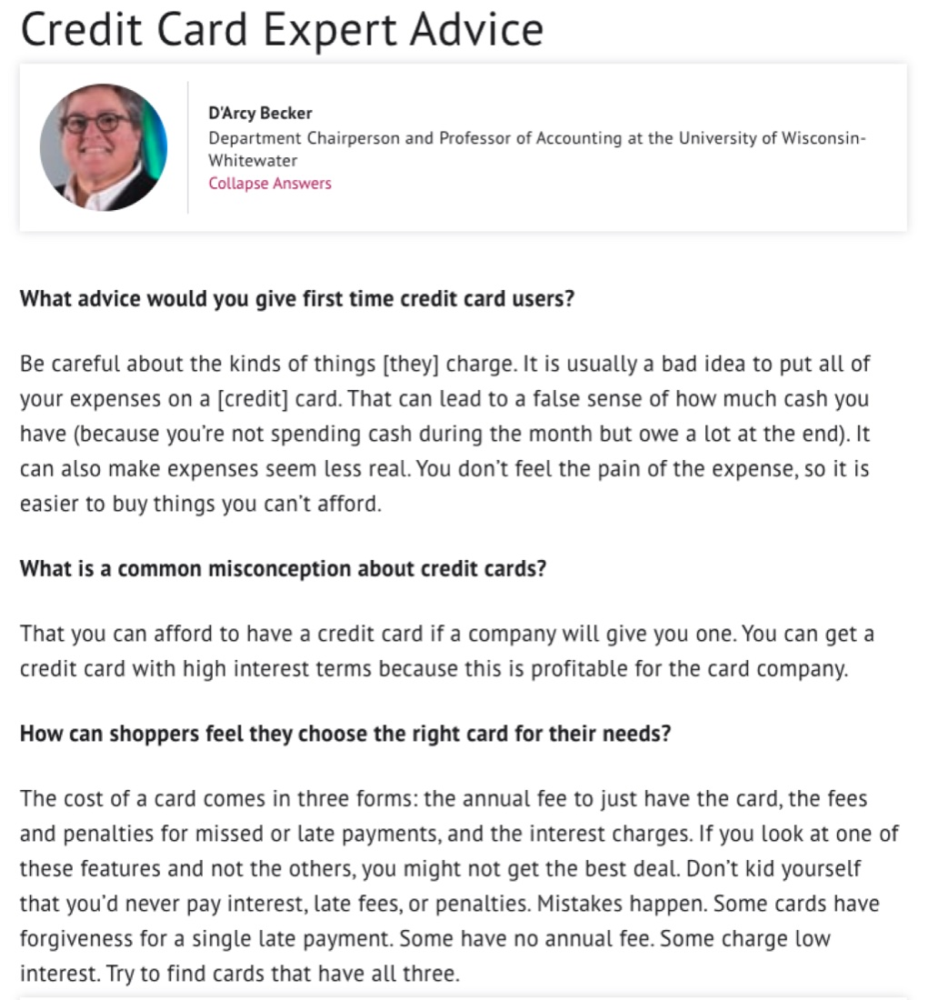
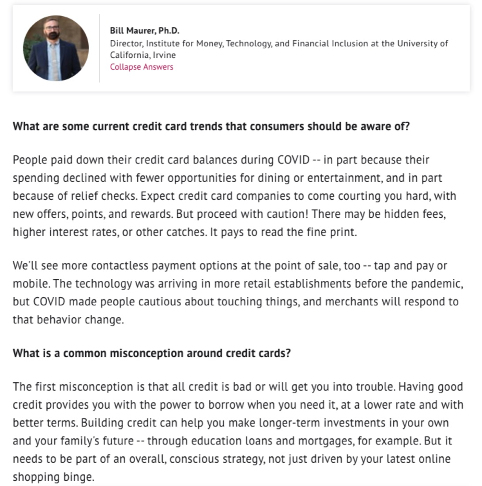
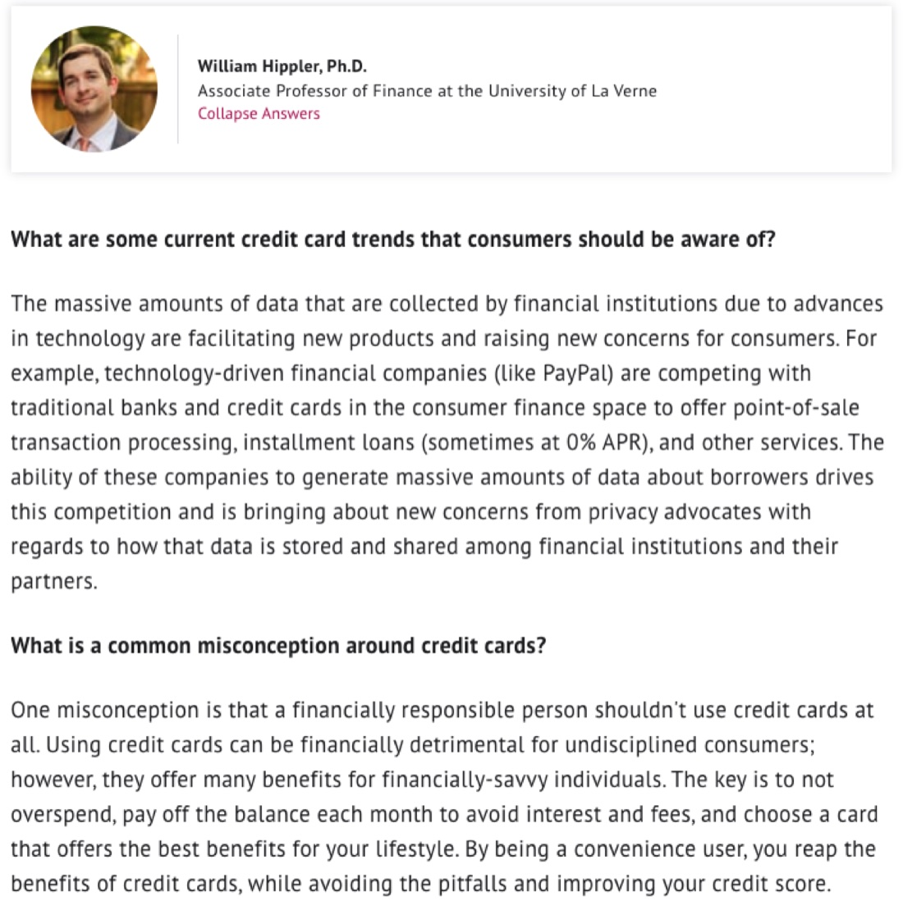

Where the angles came from Every placement started with a study like "10 Best Cities for High Salaries and Low Costs of Living." I read what the analysts produced and found the angle inside: the local hook, the surprising gender split, the number a reporter couldn't ignore. Each story I placed carried a backlink, and backlinks like these helped drive the $7.2M.
Earned Media
Public Relations for The Motley Fool
I found the stories hiding in the data. The press ran them.
My role: I turned The Ascent's in-house studies into earned media. The analysts ran the numbers. I found the newsworthy angle, wrote the pitch, and built the reporter relationships that landed the story. I also built and ran two programs from scratch: a best-of awards franchise and an academic-commentary program that earned .edu citations. Every placement carried a backlink, and those backlinks helped drive revenue.


Background
The Motley Fool is a globally known brand. Its sister company, The Ascent, a personal finance affiliate site, was not. It lacked awareness, and it lacked the organic and referral traffic that drives revenue.
Problem
Earn coverage from top-tier outlets, and the backlinks that come with it, for a brand new affiliate website with no name recognition.
Strategy
Three engines, all built and run in-house: data-driven storytelling from original research, a best-of awards franchise, and an academic-commentary program for the hardest backlink in search, the .edu citation.
Engine One
Data-driven storytelling.
Every placement started with a study from the in-house research team. My job was to read it and find the angle a reporter could not ignore.
The Craft
The best pitch I ever wrote.
The study wasn't getting traffic. So I went into the numbers and found the angle: women were being hit far harder than men. I pitched it, and it earned 10+ top-tier placements in a week, on a topic that mattered.
[Email Pitch] Income Loss During COVID, verbatim
Subject: Study: 35% of Women Won't Last a Month Without Unemployment Boost, Worse Than Men
Hi Name,
More than a quarter of American women lost all of their income due to the pandemic economy, and over a third believe they cannot survive a month without the extra $600 in unemployment benefits from the CARES Act, according to a new study by The Ascent, a Motley Fool company.
The Ascent's research of nearly 2,000 Americans shows the virus's disproportionate impact on women's finances and their coping strategies. Here are some findings:
- 28% of women have lost all of their income due to the pandemic, versus 20% of men.
- When asked how long they could live without the extra $600 in unemployment benefits, 35% of women answered "less than one month"; 26% of men said the same.
- It will take women longer to get back to their pre-pandemic financial state than men. 20% of women think three months or less, 28% think up to 6 months, and 49% think it will take more than half a year.
- Over the next three months, women with income loss are "likely" or "very likely" to cut expenses (79%), get a side job (54%), borrow from family or friends (33%), take an early retirement withdrawal (20%), take a personal loan (20%), or borrow against their home (12%).
I'm happy to offer up actionable tips from Matt Frankel, Certified Financial Planner at The Ascent, on how readers can make ends meet without putting themselves into deep financial trouble.
Best,
Zac
The pitch, as I sent it. I took a general income study and found the angle hiding inside it: women were being hit harder. That became the story.


read the full study
The Artifact
A release I wrote, from a study I mined.
For immediate release
12 States Where Renters Are Most At Risk of Housing Instability Due to the Pandemic Economy
Denver, Colo. (June 2, 2020)
With an estimated 50 million people in renter households facing immediate job or income losses, and state eviction bans soon to lift, renters in 12 states are likely to be the most at risk of housing instability, according to a new analysis by The Ascent.
The Ascent ranked all 50 states, plus Washington D.C. and Puerto Rico, on two factors: rent affordability and unemployment. The states most at risk:
- Puerto Rico
- New York and Connecticut (tie)
- Rhode Island and Mississippi (tie)
- Louisiana, California, Nevada, Hawaii, and Michigan
"Renters are in a particularly precarious position right now," says Dann Albright, research analyst at The Ascent. "It's important that we discuss this now, before we see a wave of evictions hitting families who need a place to live, and stay safe, now more than ever."
Selected Coverage
Some of the confirmed pieces.
- The New York TimesCryptocurrency study
- CNBC$600 unemployment, 35% of women
- ForbesGenerosity and happiness study
- FortuneRefinancing debt
- HuffPostContactless payment apps
- MarketplaceBuy Now, Pay Later growth
- Black EnterpriseCrypto study
- WTOP WashingtonGenerosity and happiness
- Pittsburgh Post-Gazette15 vs 30 year mortgages
- Norman TranscriptCheapest housing markets
- Miami TimesRenter and homeowner struggle
- Kalamazoo TimesMost affordable US city
- Grand Rapids Business JournalMichigan COVID fraud
- WKZO KalamazooBest city, salary vs cost
- KiplingerThe hazards of BNPL
- WFLA TampaFlorida COVID fraud
- WAVE3 LouisvilleKentucky COVID fraud
- WSAV SavannahGeorgia "scamdemic"
These are placements with a confirmed live link. Many more ran without a recoverable link.
Engine Two
The awards franchise.
I built and ran a best-of awards program in personal finance. Winning brands promoted their wins across their own channels, each one another earned signal back to The Ascent.

A few of the brands that won and amplified:
TIAA Bank
SoFi
Varo
Webull
tastytrade
Alliant Credit Union
Veterans United
Goodbudget
Homesnap
Better.com
For immediate release
The Ascent by The Motley Fool Announces Best-Of 2020 Award Winners
Denver, Colo.
The Ascent released the winners of its Best-Of 2020 Awards, determined by an editorial team of 15 personal finance experts with over 10,000 published bylines, scored against proprietary ratings models.
"If we wouldn't recommend a financial product to a family member or close friend, we wouldn't recommend it to our community either," says Nathan Hamilton, director and industry analyst at The Ascent.
Winners spanned banking, stock brokers, mortgage lenders, personal loans, and credit cards. A sample: Best Modern Banking Experience, Varo. Best Robo Advisor for Low Costs, SoFi. Best Lender for Online Mortgages, Better.com. Best Mortgage Lender for VA Loans, Veterans United.
The award badges still run on The Ascent's best credit cards page. See how the awards are positioned today →
Engine Three
Academic commentary, the hardest backlink.
A .edu citation is the most powerful and most difficult backlink in search. So I built a program that put credentialed professors on The Ascent's highest-value pages, and earned mentions back on their university sites.



Commentary placed with professors at:
UPenn (Wharton)
UC Berkeley (Haas)
USC
University of Richmond
Colgate University
LSU
Florida Atlantic University
Wichita State University
UNLV
The Result
Number one for the most competitive keyword in personal finance.
#1The Ascent ranked number one for "credit cards," the most competitive keyword in personal finance
$7.2Min revenue in under two years
100+earned media pieces across national, regional, radio, and TV